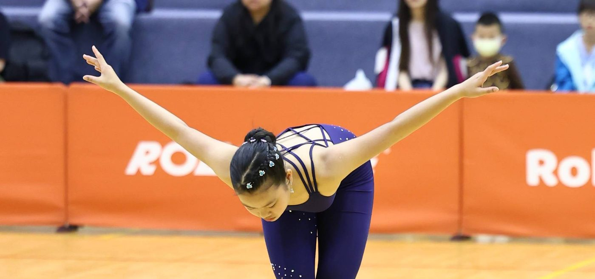
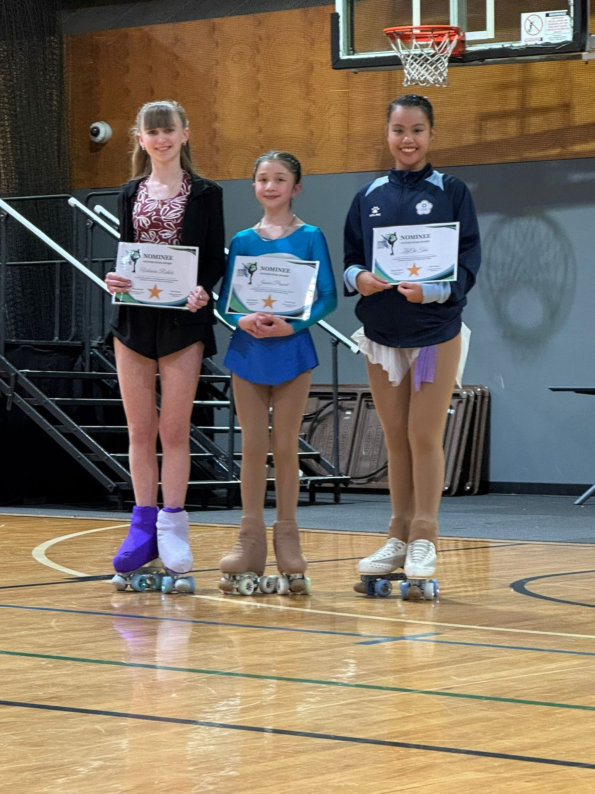
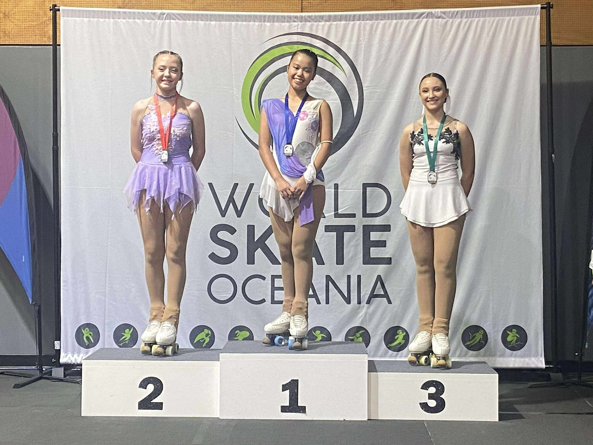
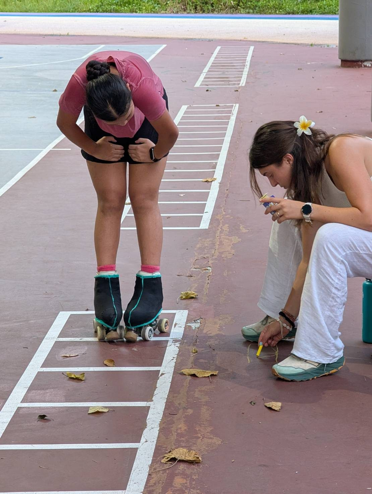

01我的故事
蔡子琦，新北市達觀國中九年級學生，自六歲起接觸花式溜冰，在三年級時成為比賽型選手。即便在疫情期間課程中斷，她依然保持跳繩、原地跳高等每日運動的習慣，展現出高於同齡的自律與熱忱。
雖然天生肢體協調能力較弱，且未曾接受過體操或舞蹈訓練，但她始終銘記教練與師長的教誨與期望。憑著對溜冰的熱愛，她常自主觀看 YouTube 影片加強體能訓練，並對著鏡子細心調整姿態。在資源有限的情況下，仍努力與其他選手並肩競技，積極挑戰自我。
過去的比賽成績多處於中段，但她從未因此放棄。在教練與諸多貴人的協助下，子琦克服心理障礙，於今年3月的臺灣國際公開賽中脫穎而出，獲得青年女子組國內第二名，創下個人最佳成績，並取得亞錦賽的參賽資格。7月，她在亞錦賽中突破旋轉的困難，勇奪第五名；8月更於太平洋盃獲得冠軍，並榮獲大會頒發的「明日之星」獎項。
這些佳績成為她持續前進的動力。如今，她更加嚴格要求自己，投入更多時間與精力於訓練。目前的訓練安排包含：每週兩次與國內教練的技術訓練、一次與西班牙教練的線上課程、一次體能訓練，以及一次毯子功課程。子琦期許自己在花式溜冰領域中，不斷精進技術，突破極限，展現更耀眼的風采。



